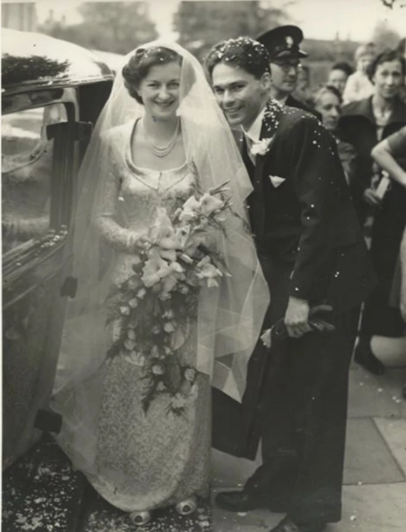
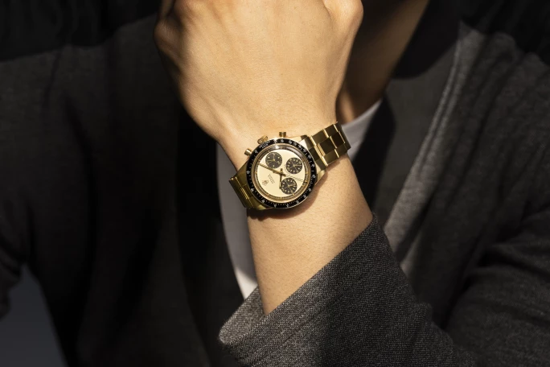
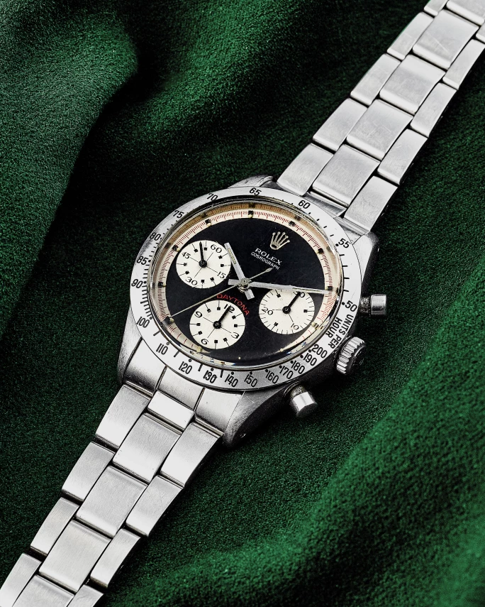
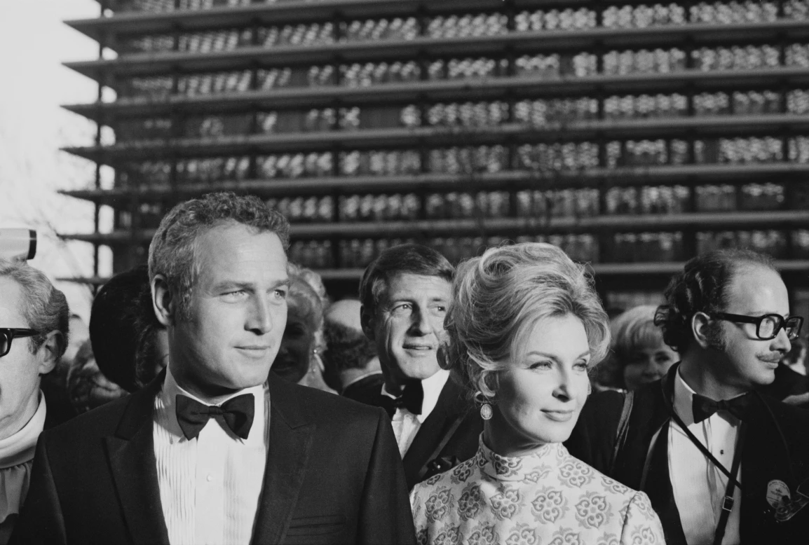
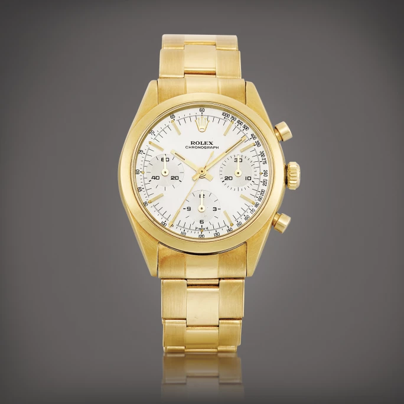

譯自 Rachael Sigee · Sotheby's Hong Kong · 2023年3月16日
一件物品之所以珍稀，可能是因為它有著特定來源，曾屬名人珍藏，或在著名的歷史事件中起了作用；又或者，它是一件大師之作，由極其稀缺的原材料製成，只有極少數同類產品，隨著時間流逝，只有少部分流存至今。物以罕為貴，珍罕難求的藏品往往令人垂青，價值不菲。
有時，稀有意味著物品完美無瑕，但有時，正是不完美之處讓物品顯得格外珍貴。本文介紹的勞力士手錶本已是稱霸錶壇的「錶王」，但一處微瑕令它更為萬眾矚目，成為拍賣會上其中一件最令人嚮往的藏品。

1950年婚禮當天，夫妻神情幸福美滿
1975 年，故事中的主人翁獲妻子送贈一枚勞力士6239型號 Paul Newman Daytona手錶，作為結婚25週年禮物。這對青梅竹馬的夫婦共同歷經第二次世界大戰，在1950年共諧連理。丈夫婚後繼續在英國軍隊服役，他們在印度和伊拉克居住，育有兩子。
妻子以一張135英鎊的支票購買價值134英鎊的手錶，並收回一張 1 英鎊鈔票、收據和勞力士官方防偽證書。這些原始文書全由丈夫保存。他對這枚手錶珍愛有加，每天上班途中都會使用手錶的計時功能，參照沿途地標，計算通勤火車的行駛速度。
不過，每天檢查手錶的習慣令三個小錶盤的顏色逐漸由黑色變成深棕色。多年後，有人向他指出變色現象，令他沮喪不已，因為在外行人看來，手錶的價值似乎日走下坡。可幸的是，有一天，他偶然拜訪當地一家珠寶商，才發現這種非比尋常的色變實際上讓手錶變成難得一見的珍品。

勞力士 | Cosmograph Daytona "Paul Newman" 型號6241 | 14K 黃金計時鏈帶腕錶，備香檳色錶盤，約1969年製 | 估價 3,200,000 - 6,500,000 港元
這種錶盤又被稱為「tropical」錶盤，深棕色的形成是因為製造過程中使用的化學塗層未能充分發揮保護作用，與光產生反應。這種焦糖色的錶盤為數不多，後來成為拍賣場上最令人夢寐以求的鐘錶特色之一。
2018年5月，此錶（連錶盒、證書、收據和當年的 1 英鎊零錢）在日內瓦拍賣，估價為200,000至400,000瑞士法郎（即208,000至416,000美元）。經過一輪激烈競投，手錶最終以951,000瑞士法郎（即947,776美元）售出，是最低估價的四倍。

勞力士 | Cosmograph Daytona "Paul Newman Musketeer" 型號6239 | 精鋼計時鏈帶腕錶，備 Musketeer 錶盤，約1969年製 | 估價 1,200,000 - 1,600,000 港元
1955年，勞力士推出6234型號計時腕錶，當時市場反應一般。不過，1962年，勞力士成為全球知名的迪通拿（Daytona）賽車比賽的官方計時，一年後推出全新的計時腕錶 Cosmograph 6239。這款手錶專為賽車手設計，精準可靠而且堅固耐用，很快就被暱稱為「Daytona」。

1969年4月14日，第41屆奧斯卡頒獎典禮紅地毯上的保羅·紐曼和瓊安·伍德沃。（圖片來自 GRAPHIC HOUSE/ARCHIVE PHOTOS/GETTY IMAGES）
荷里活演員保羅·紐曼（Paul Newman）是勞力士手錶的忠實支持者，自他加入佩戴6239型號的行列後，這個型號的人氣飆升。紐曼同為演員的妻子瓊安·伍德沃（Joanne Woodward）為了紀念丈夫在1972年開始的賽車生涯，送贈他一枚配備「Exotic」錶盤的全新 Cosmograph Daytona 6239型號手錶。隨後，紐曼經常被拍到佩戴這款手錶，因此人們又稱它為「Paul Newman」。此型號在中古錶界廣受歡迎，白色或黑色錶盤襯以對比鮮明的小錶盤和錶圈，極具辨識度。
「Paul Newman」所引伸的變奏版也大受歡迎，例如6241型號就與著名的6239型號非常相似，幾乎毫無差別。6241型號在1965年至1969年期間限量生產約2700枚（其中只有約400枚由14k黃金製成），有說比備受追捧的6239型號更為稀有。
6239型號的成功亦令名為「Pre-Daytona」的6238型號變得炙手可熱。6238型號在1961年開始生產，是 Daytona 借鑒最多的型號，兩者基本上只有兩處不同。另外，6238型號是勞力士最後一款配備光滑錶圈和錶盤上印有測速刻度的計時腕錶。
今次故事中的 Daytona 在1975年本已是一件別緻之物，既是送贈摯愛的禮物和奢侈品，又是佩戴者每天惜之用之的心愛之物。倘若故事就此寫上句號，這枚手錶仍會是一件雋永而迷人的物品。不過，人生玄妙莫測，因緣際會下，特別化作不凡，成就出可遇不可求的熱帶錶盤手錶，更見精彩。

勞力士 | "Pre-Daytona" 型號6238 | 黃金計時鏈帶腕錶，約1964年製 | 估價 650,000 - 1,300,000 港元